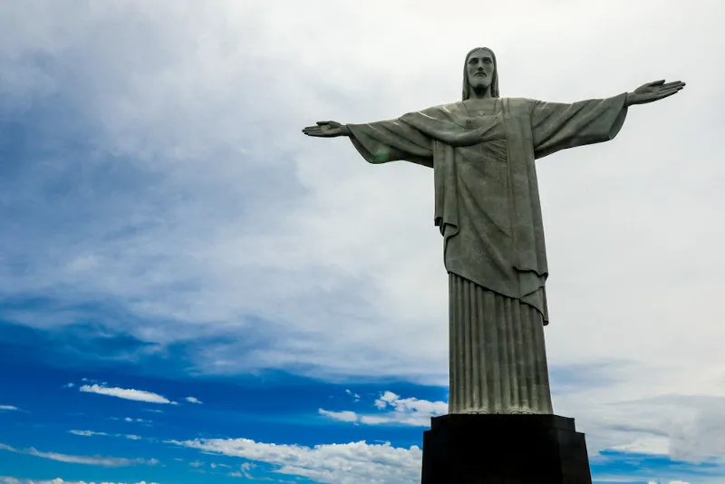

7 maravilhas do mundo moderno
As sete maravilhas do mundo moderno são uma lista de grandes construções que foram escolhidas pelo público em uma enquete pública realizada por uma empresa suíça.
O que são as sete maravilhas do mundo moderno?
As sete maravilhas do mundo moderno são um conjunto de sete construções que são consideradas verdadeiras maravilhas da humanidade, recebendo destaque por sua beleza e significância.
Essa lista é uma atualização não oficial da lista formulada na Antiguidade e conhecida como sete maravilhas do mundo antigo. A versão antiga foi elaborada por um grego chamado Filão de Bizâncio, no século III a.C.
A nova lista de maravilhas do mundo foi elaborada pela organização suíça New Open World Corporation (NOWC). A organização deu início a uma competição, com o intuito de que fossem escolhidas as sete novas maravilhas do mundo. Essa competição não teve caráter oficial, mas popularizou a lista e as construções.
Cristo Redentor
O Cristo Redentor é uma estátua de Cristo com os braços abertos construída no alto do morro do Corcovado, estando 709 metros acima do nível do mar. Essa estátua foi inaugurada em 12 de outubro de 1931, e sua construção aconteceu na França, embora sua montagem tenha sido realizada aqui.
A construção do Cristo Redentor foi a conclusão de um projeto de longa data que desejava uma estátua no alto do morro do Corcovado. Faz parte do atual Parque Nacional da Tijuca, sendo que o Cristo Redentor, em dados de 2019, recebia cerca de dois milhões de visitantes por ano. Desde 2012, o Cristo Redentor é considerado um Patrimônio da Humanidade pela Unesco.
Grande Muralha da China
A Grande Muralha da China é um conjunto de fortificações construídas no norte da China, e a construção desse monumento foi iniciada no período da Dinastia Qin (221-206 a.C.), seguindo por muitos séculos, e, na Dinastia Ming (1368-1664), foram construídas as últimas instalações.
Essas fortificações foram desenvolvidas por antigas civilizações chinesas, com o intuito de afastar povos nômades que viviam na região das estepes, em especial os mongóis. Algumas partes da Grande Muralha chegam a ter nove metros de altura, e estima-se que sua extensão seja de mais de 21 mil quilômetros.
Petra
A cidade de Petra, localizada na Jordânia, é uma cidade histórica que foi resgatada, em 1812, pelo explorador Johann Ludwig Burckhardt. Era um importante centro comercial dos nabateus, povo semítico originário da península Arábica que se estabeleceu na região de Petra graças às importantes rotas comerciais que transportavam mercadorias, como o incenso árabe, a seda chinesa e as especiarias indianas.
Estima-se que sua construção tenha acontecido por volta do século I a.C. A grande fama de Petra vem do fato de que a cidade foi esculpida dentro das rochas, sendo chamada de Cidade Rosa, por causa da cor das pedras. Tornou-se Patrimônio da Humanidade em 1985, e, atualmente, recebe mais de um milhão de visitantes anuais.
Coliseu
O Coliseu é uma construção localizada em Roma, Itália. Esse anfiteatro romano era palco de grandes espetáculos teatrais e também sediava lutas de gladiadores durante a fase imperial romana. Sua construção se deu entre 72-80 d.C., período que cobriu os reinados de Vespasiano e Tito.
Os romanos chamavam o Coliseu de Amphitheatrum Flavium, e estima-se que esse anfiteatro suportava 50 mil espectadores. Foi largamente utilizado entre os anos de 80-404 d.C., e possuía 45 metros de altura. Seu uso foi sendo gradativamente reduzido a partir do século V, e sua estrutura sofreu danos por dois terremotos, um em 422 e outro em 1231
Chichén Itzá
Chichén Itzá é uma cidade histórica pré-colombiana que foi construída na península de Yucatán, no México. A cidade foi construída pelos maias, mas sofreu grandes influências culturais dos toltecas. Acredita-se que ela tenha se desenvolvido em duas fases distintas. Uma fase teria se estendido do ano 300 ao ano 900 aproximadamente.
A influência maia na cidade de Chichén Itzá se fez presente entre os anos de 750 e 1200 aproximadamente. Ela foi uma das grandes cidades mesoamericanas, sendo marcada por um comércio próspero e um importante centro militar e também religioso naquela região.
Machu Picchu
Machu Picchu é uma cidade inca que foi construída em uma montanha a cerca de 2400 metros de altitude, localizada no vale do rio Urubamba, no Peru. A cidade foi fundada pelo imperador inca Pachacuti, em 1450. Acredita-se que o local possuía capacidade para abrigar apenas 1000 habitantes.
Acredita-se que Machu Picchu tenha sido construída com propósitos religiosos, sendo dedicada ao deus inca Inti. Com a conquista dos incas pelos espanhóis, liderados por Francisco Pizarro, a cidade foi abandonada pelos incas, ficando esquecida por quase 400 anos. Foi reencontrada, em 1911, por um explorador norte-americano chamado Hiram Bingham.
Taj Mahal
O Taj Mahal é um mausoléu que foi construído em Agra, na Índia, entre os anos de 1631 e 1653. Esse mausoléu foi construído por ordem de Shah Jahan, imperador do Império Mugal. A construção se deu como uma homenagem do imperador a sua esposa favorita, chamada Mumtaz Mahal. Ela faleceu durante o trabalho de parto de seu 14º filho.
A construção do Taj Mahal foi realizada por cerca de 20 mil homens. Ela foi considerada Patrimônio da Humanidade pela Unesco em 1983, e, atualmente, é visitada por cerca de seis milhões de pessoas todo ano.